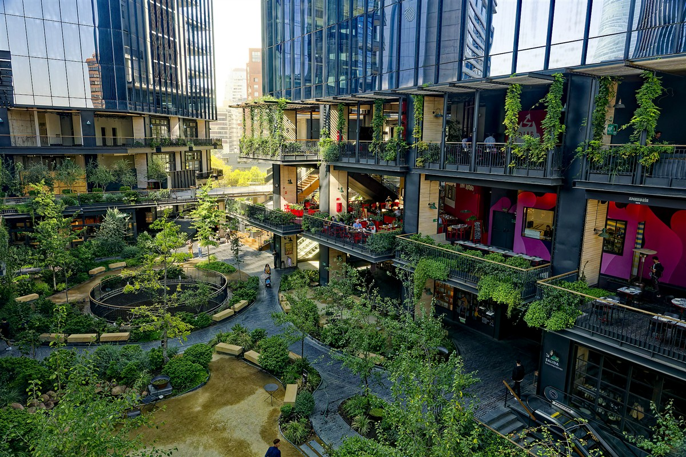
El Jardín —
Mercado Urbano Tobalaba
El Mercado Urbano Tobalaba (MUT) es un desarrollo de uso mixto en Santiago, Chile, operado por Territoria. Plant Art diseñó y ejecutó el paisajismo de El Jardín, el espacio central verde del proyecto, e integró un sistema de riego automatizado y protocolo de mantención activa desde la apertura del activo en 2023.
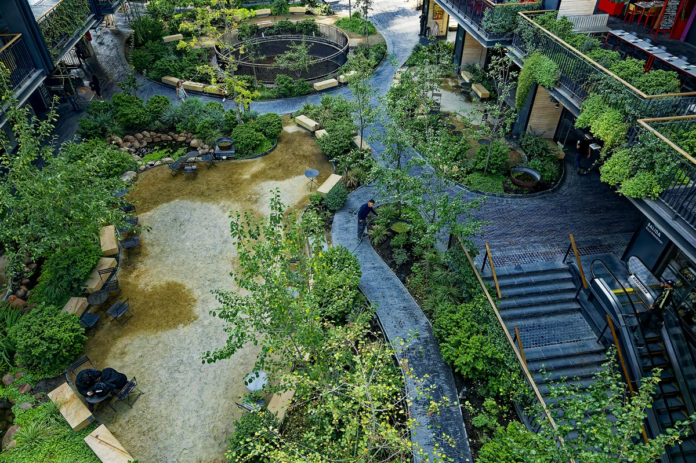
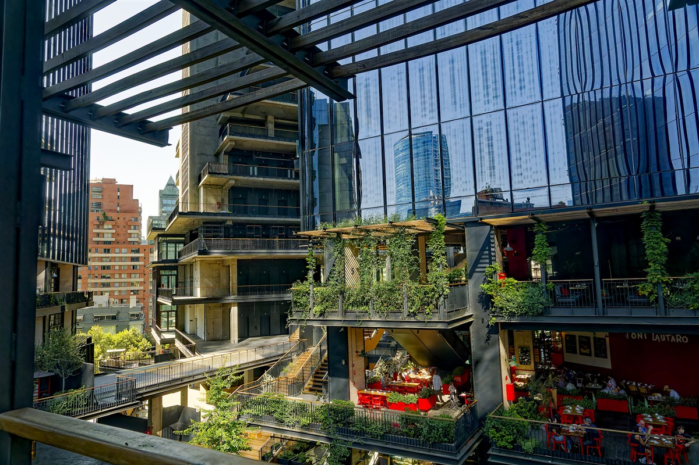
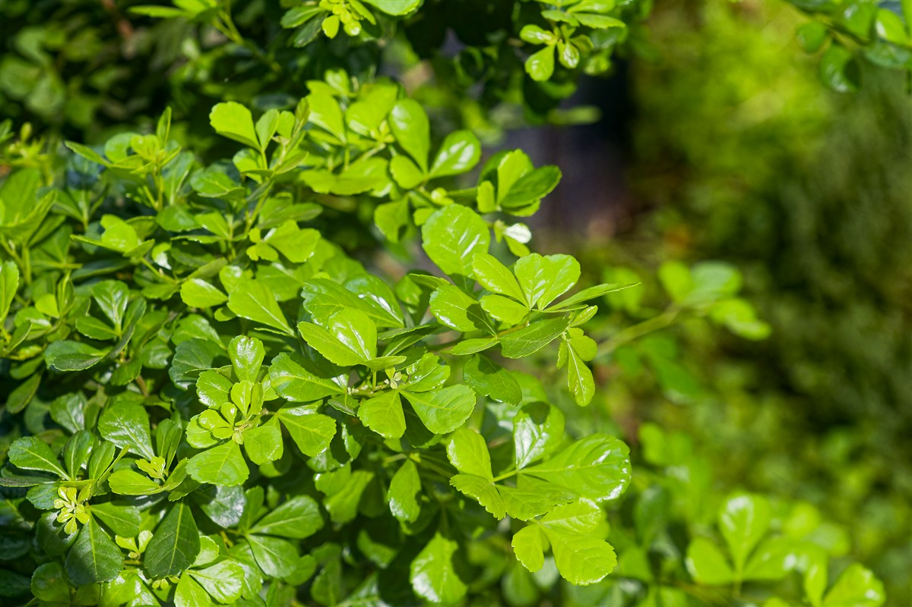
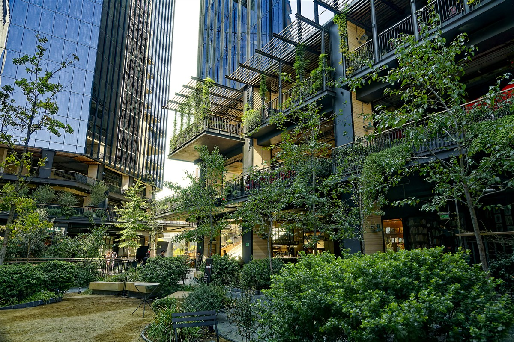
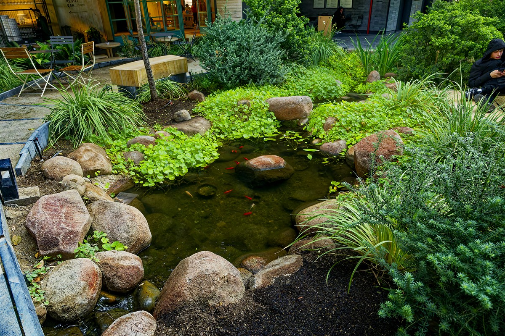
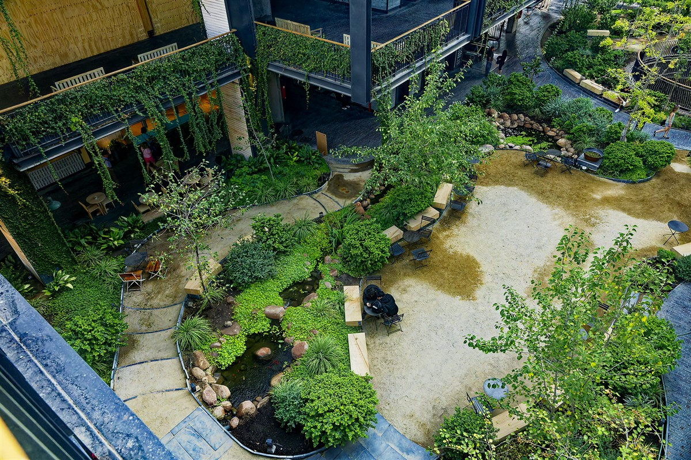
El Jardín del Mercado en MUT exigía integrar infraestructura verde viva en un desarrollo de uso mixto de alta complejidad —con gastronomía, retail y oficinas conviviendo en un mismo activo de gran escala. La naturaleza debía funcionar como capa estratégica del espacio, sin interrumpir la operación diaria ni comprometer los estándares de certificación LEED Platino del activo.
Plant Art diseñó y ejecutó el paisajismo del jardín central, integrando selección de especies, sistemas de sustrato y riego automatizado calibrado al microclima del espacio. Desde la apertura en 2023, el equipo opera la mantención activa del jardín bajo protocolo continuo, garantizando el estándar visual y técnico del activo en todo momento.
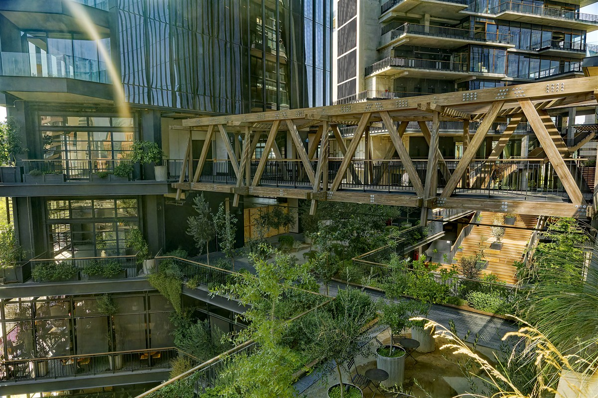
El activo opera con +2 años de mantención ininterrumpida desde su apertura en 2023. Los parámetros técnicos de humedad y conductividad EC se monitorean en tiempo real a través de la plataforma de gestión de Plant Art.
Platino Certificación del activo
ULI Americas Awards
for Excellence 2025
El Mercado Urbano Tobalaba fue reconocido internacionalmente como el único proyecto latinoamericano ganador del ULI Americas Awards for Excellence 2025. Plant Art ejecuta y opera el paisajismo de este activo desde su apertura.
Nota de atribución
El Premio ULI Americas Awards for Excellence 2025 fue otorgado al proyecto MUT / Territoria como desarrollo integral. Plant Art participó como ejecutor y operador del paisajismo del jardín central. La certificación LEED Platino pertenece al activo MUT.
El BLAP 2024 (1er lugar) fue otorgado a JL Arquitectura del Paisaje (Javiera Jadue y Paula Livingstone). Plant Art no reclama autoría sobre dicho reconocimiento.
Archivo fotográfico
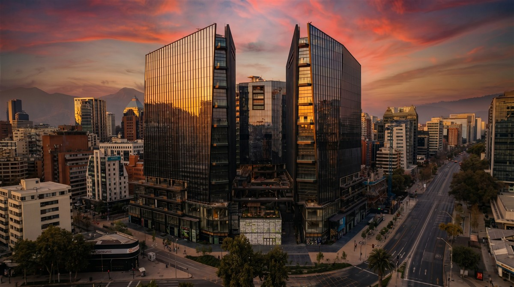
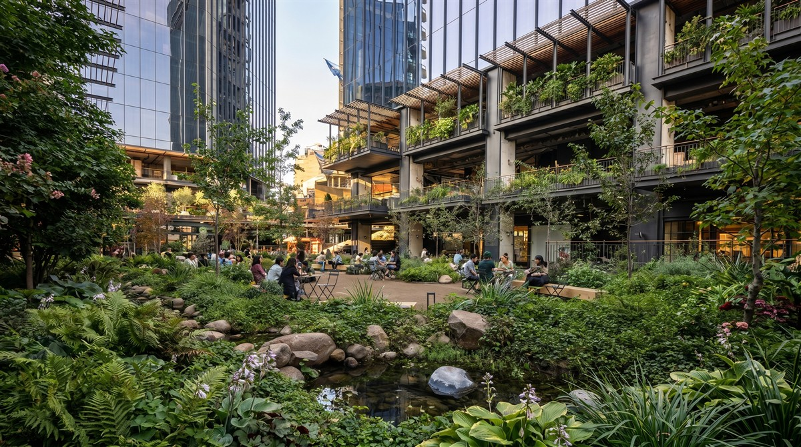
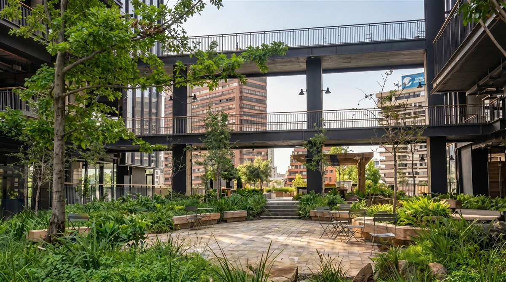
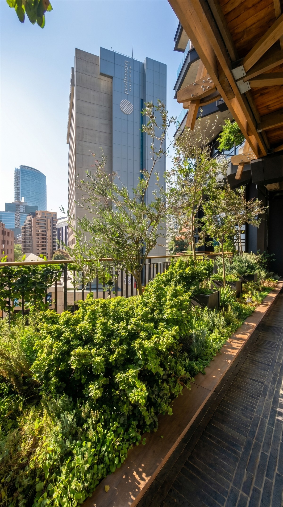
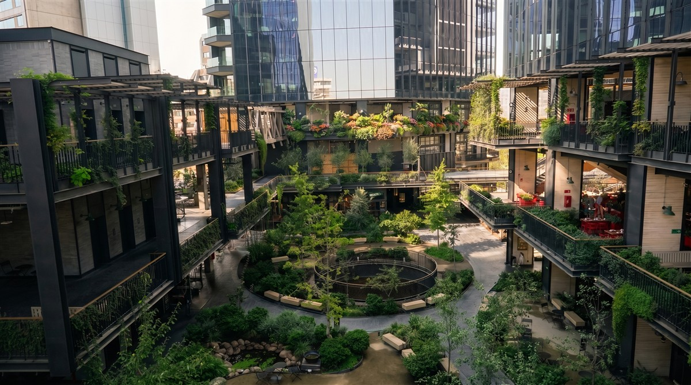
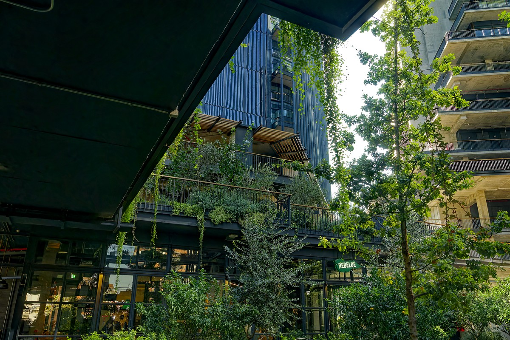
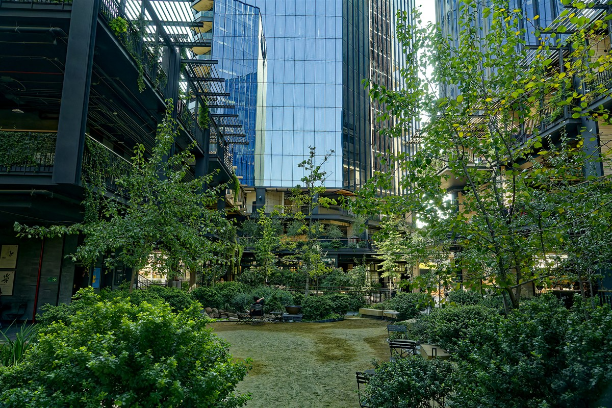
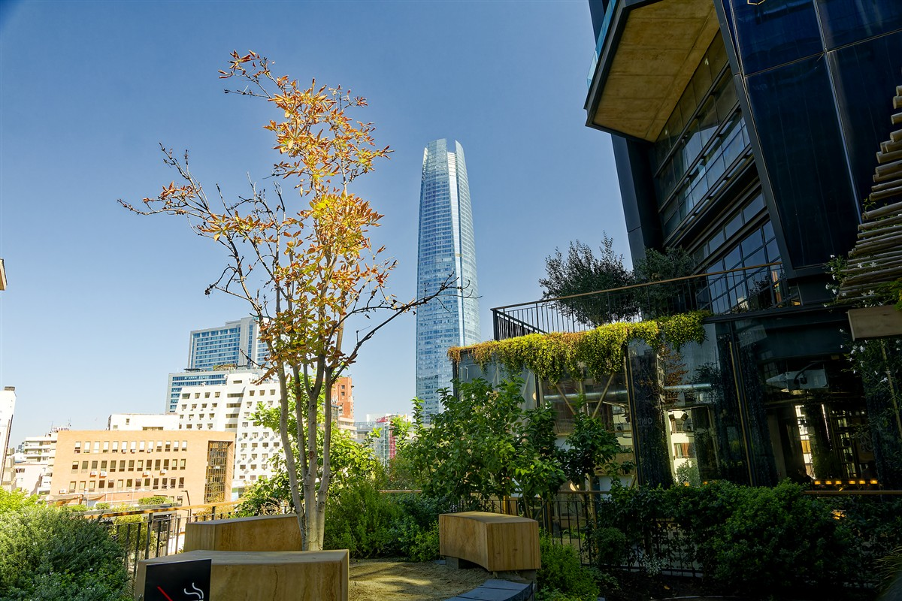
Solicitar evaluación para tu activo.
En 48 horas tienes una evaluación técnica sin costo.